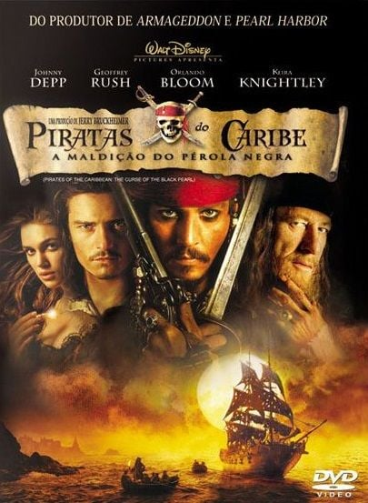
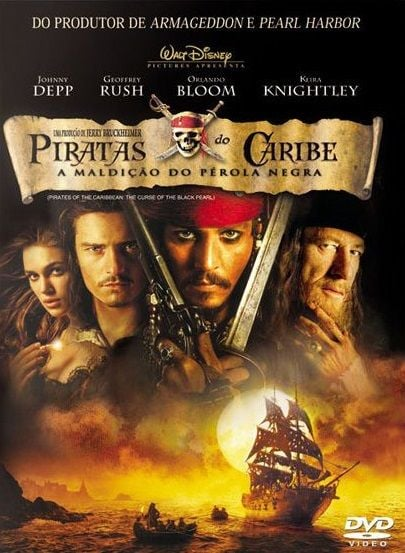

Assistir filmes não precisa ser complicado! Organize-se para aproveitar melhor sua maratona sem atrapalhar sua rotina. Acompanhe o que deseja assistir ou já assistiu.
Ao clicar no botão de menu você poderá acessar paginas de varias categorias de filmes. entrando nelas será possível marcar os filmes que já assistiu e filtrar entre aqueles que não viu e que deseja assistir e os já vistos.
 
